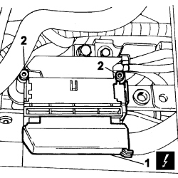
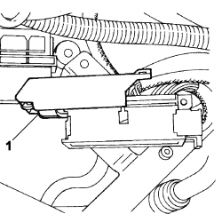
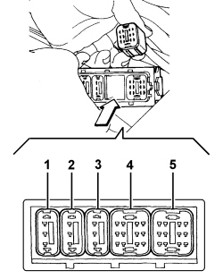

2135B AUTOMATIC TRANSMISSION ELECTRICAL CONTROLS
- Path
- Procedures > 21 GEARBOX UNIT > 2135 AUTOMATIC TRANSMISSION EXTERNAL CONTROLS > 2135B AUTOMATIC TRANSMISSION ELECTRICAL CONTROLS
- Kind
- repair procedure (removal / refitting; the operation number is the code)
- Applies to
- engines: 2.0 16v, 3.0 24V V6, 2.0 16V JTD; all production periods
- Interactive page
- https://sloeber94.github.io/elrnDB-fUlss/en/#/179007259
Subtopics (3)
- 2135B72 ELECTRONIC AUTOMATIC TRANSMISSION INPUT RPM SENSOR - R R
- 2135B58 ELECTRONIC AUTOMATIC TRANSMISSION SYSTEM WIRING - R R
- 2135B74 ELECTRONIC AUTOMATIC TRANSMISSION OUTPUT RPM SENSOR - R R
Applies to: engines: 2.0 16v, 2.0 16V JTD; all production periods
 Removing
Removing
 Refitting
Refitting- Turn the ignition key to the OFF position.
- Disconnect the negative battery terminal.
Description | Connector |
|---|---|
Battery | A001 |
Op. 1048A11 AIR CLEANER ASSEMBLY - R R FOR VERSIONS WITH AUTOMATIC TRANSMISSION
1. Working on the mounting cursor, disconnect the electrical connection from the interface module.
Description | Connector |
|---|---|
AUTOMATIC TRANSMISSION VALVE ASSEMBLY | L050 |
2. Undo the two bolts securing the interface module to the gearbox.

Applies to: engines: 2.0 16v, 2.0 16V JTD; all production periods
1. Cut the retaining band and remove it, then release the interface module cover.

Applies to: engines: 2.0 16v, 2.0 16V JTD; all production periods
Turn the relevant interface module block in the arrowed direction using finger pressure only:
1 - heat exchanger by-pass solenoid - blue - 3 pin
2 - input speed sensor - yellow - 3 pin
3 - oil pressure sensor - green - pin no. 3
4 - hydraulic and fluid temperature block - yellow - 12 pin
5 - multfunction switch - green - pin no.12

Applies to: engines: 2.0 16v, 2.0 16V JTD; all production periods
Refitting
RemovingFit the relevant block in the interface module.
Fit the cover on the interface module and secure it using a new band.
Position the interface module, screw in the fixing bolts and tighten to the recommended torque.
Value daNm | Fastening | Component | dia |
|---|---|---|---|
1,0 | Bolt | Interface module to gearbox fastening |
Connect the electrical connection to the interface module and close the mounting cursor.
Description | Connector |
|---|---|
AUTOMATIC TRANSMISSION VALVE ASSEMBLY | L050 |
Op. 1048A11 AIR CLEANER ASSEMBLY - R R FOR VERSIONS WITH AUTOMATIC TRANSMISSION
Connect the negative battery terminal.
Description | Connector |
|---|---|
Battery | A001 |